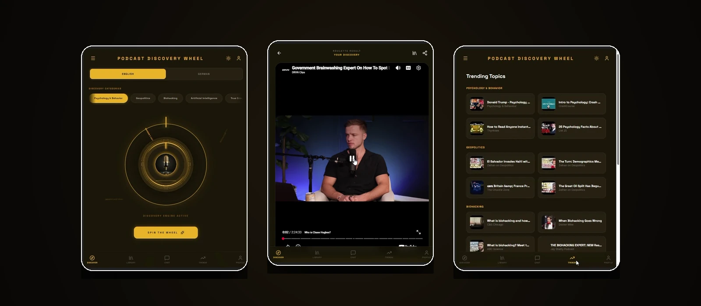

Notes · AI Interfaces
Putting an AI behind a small UI
Podcast Discovery Wheel uses Gemini for two things: a summary of whatever the wheel lands on, and a chat panel for asking about what you have found. Both are the easy part. The work is in what the interface promises while the model is thinking, and what it says when the model has nothing.
A summary is a contract, not a paragraph
"Summarise this episode" produces something plausible and useless — a paragraph that describes the topic instead of telling you whether you want to spend an hour on it. A summary is only worth showing if it answers a fixed set of questions, every time:
- What is the claim? The one thing the episode argues or reveals.
- Who is it for? Someone who already knows the field, or someone arriving fresh.
- What does it cost? The time it takes, and whether that time is earned.
Once the shape is fixed, the prompt stops being a wish and becomes a form to fill in. The output is consistent enough to lay out on a card, which is what makes it readable at a glance rather than a wall of generated prose.
The loading state is design work
An AI call takes seconds. That is an eternity in an interface, and the default answer — a spinner — throws those seconds away. The alternative used here is a skeleton card: the shape of the result, in place, before the result exists. The layout does not jump when the content arrives, and the waiting has a form.
The copy matters as much as the shape. "Loading" describes a machine; analyzing signal describes what the app is doing on your behalf. Same wait, different relationship.
Design the empty answer before the good one
Every model call has three outcomes, and the good one is the only one that gets designed by default. The other two — nothing found, and the request failed — are where a small app either feels considered or falls apart.
A failed request should not look like a broken app. It should look like a result: something on screen that says what happened, keeps the controls alive, and lets the person try again without reloading the page. The same applies to a thin result — an episode with almost no description still needs a card that holds together, or the whole layout collapses around the gap.
Two trust models, two interfaces
The spin and the chat are both powered by the same model, and they must not look alike. A spin makes a decision for you: it needs to feel authoritative, immediate, and finished. A chat is a conversation: it needs to feel provisional, and it needs room to be wrong.
That is why the chat lives behind its own tab rather than being folded into the result card. Mixing them would make the wheel feel like it is guessing, and the chat feel like it is issuing verdicts — the worst of both.
The project
Pick a category, spin a gold dial, and get one episode instead of a feed — with a summary, similar discoveries, and a Gemini-powered chat for what to listen to next.